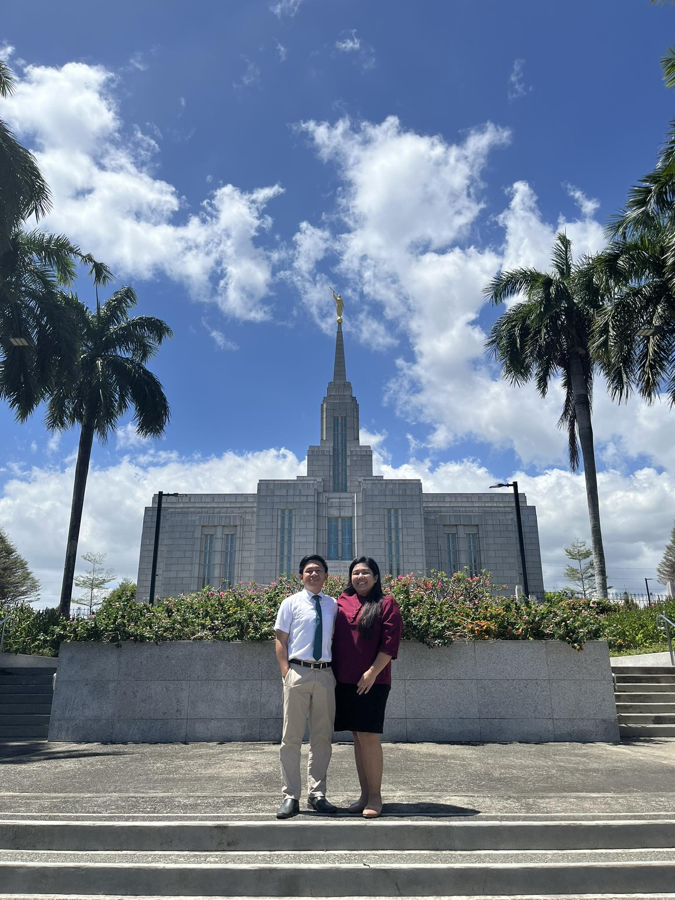

About me
My name is Raphael and you can call me Raphy. I am from the Philippines, specifically from Zamboanga City in Mindanao. I am self employed right now and I am very interested in learning more about web development.
Zamboanga City, Philippines
Zamboanga City, located in the southwestern part of the Philippines, is known as the "Asia's Latin City" due to its rich Spanish heritage and Chavacano language, a Spanish-based creole. It is a vibrant port city with a blend of cultures and traditions, featuring historic sites, beautiful beaches, and diverse cuisine.
Web Dev Resources
w3schoolsUdemy
CSS Tricks